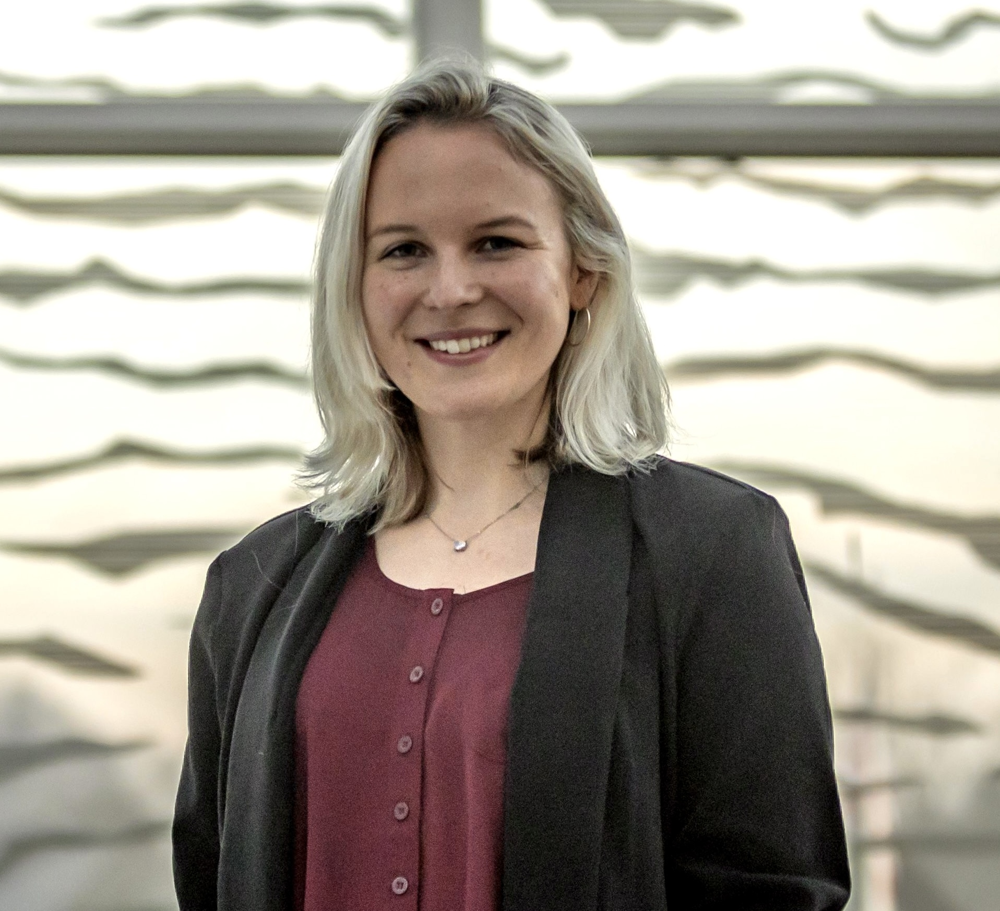

Meet the 2024 FCAD Mentors!
Interested in being a Mentor? Send us an email to ask how!

Mark Giovinazzi, PhD (he/him/his)
Postdoctoral Fellow, Amherst College
Research: I am an Astronomy postdoc studying planets, brown dwarfs, and stars in our Sun's neighborhood with the ultimate goal of learning how these different objects form.Mentorship: I am a neurodivergent, first-generation college student with the goal of making academia more accessible to students of all backgrounds. I created the GRAD program as a graduate student at the University of Pennsylvania, where I was a National Science Foundation Graduate Research Fellow, and have mentored more than a dozen undegraduates through their graduate application processes.
Website: markgiovinazzi.github.io

Phoebe Heretz (she/her/hers)
First-Year Graduate Student, UMass Amherst Astronomy
Research: I am an extragalactic researcher primarily using spectroscopy to understand how galaxies evolve over cosmic time. I am working with Daniela Calzetti and Alex Pope at UMass, and am affiliated with Lisa Kewley's group at the Harvard & Smithsonian Center for Astrophysics. I have additional research experience working with a protoplanetary disk group called JDISCS, where we use JWST to observe the chemistry in these forming solar systems to better understand how they evolve.Mentorship: I am a non-traditional, returning student who hails from a small astronomy department, and am eager to share my perspectives to help other students navigate this complex application process. I was awarded an National Science Foundation Graduate Research Fellowship (GRFP) during my senior year, and can assist fellow students with applying for this fellowship. I come from a background in sales & marketing and can use this unique perspective to help you sell yourself!
Website: https://www.linkedin.com/in/phoebe-heretz